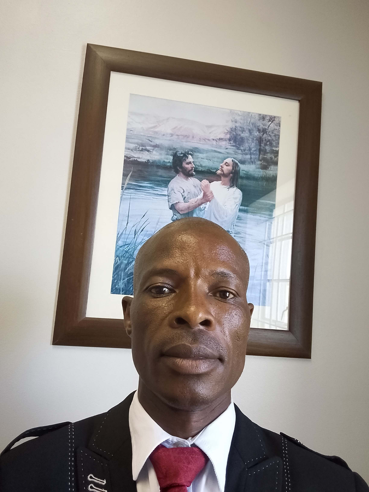
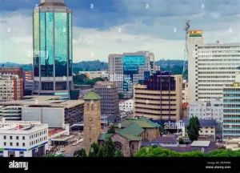

About Me

Hello! My name is Masango Dewheretsoko and I am from Zimbabwe. I enjoy learning about technology and web development. Currently I am studying Web Fundamentals (WDD 130) where I am learning how to build websites using HTML and CSS. I am excited to improve my programming and web design skills as I continue developing my knowledge in technology and digital solutions.
My Favorite City: Harare

Harare is the capital city of Zimbabwe. It is known for its beautiful skyline, bustling markets, and friendly community. I love visiting Harare because of its vibrant culture and interesting historical sites.
Salt Lake Temple

The Salt Lake Temple is one of the most historic temples of The Church of Jesus Christ of Latter-day Saints. It is located in Salt Lake City, Utah, and took 40 years to complete. The temple is a sacred place where members make covenants with God and perform important ordinances.